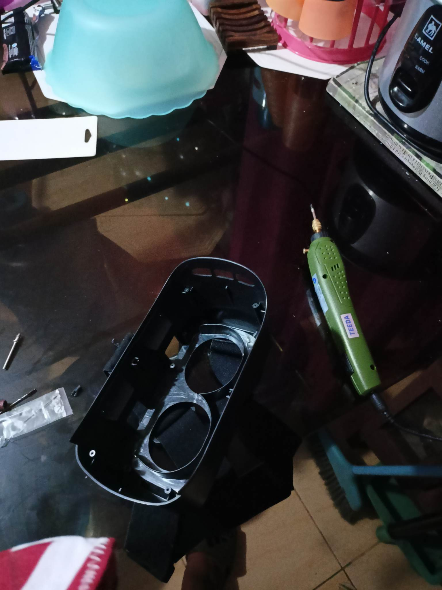
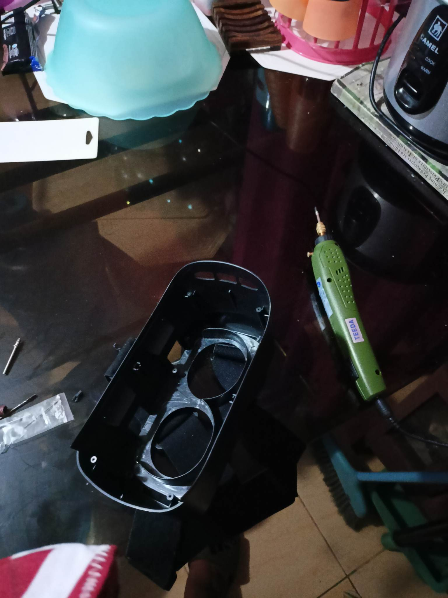

Building the device:
The production of the device started in early January of 2023 as the second semester started 2023. Most of the materials used in production were purchased at a cheaper price at Facebook Marketplace. The total cost for buying all the parts was ₱10,000 pesos or around $185 dollars at that time.
Persons responsible for the hardware construction are Ashley Cabreros and Jrodd Tecson while persons responsible for the software are Hans Dela Cruz and Jrodd Tecson.
Difficulties arose during production of the device such as the lithium batteries nearly catching fire during installation of the battery slot, device cooling methods, testing the device if OpenCV was detecting objects, and tweaking the detection distance of the Raspberry Pi Cam and the ultrasonic sensor.
 

Respondents Trying The Product
Before we were able to fit them the device, we have signed a Non-disclosure agreement with the participants obtaining their consent through their signatures and thumb marks anonymizing their identities while obtaining their opinions after they tried our the device.